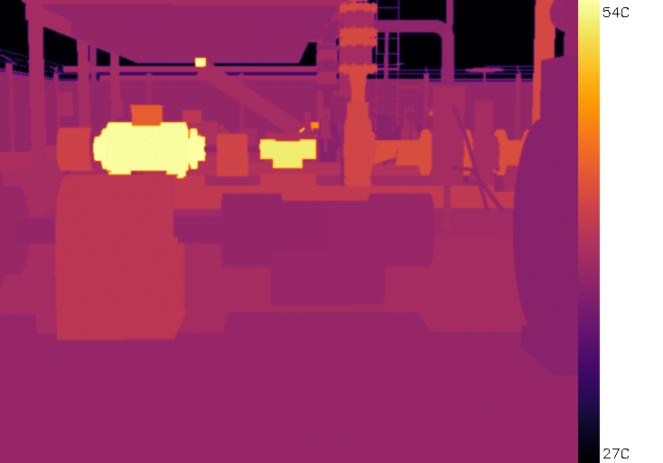
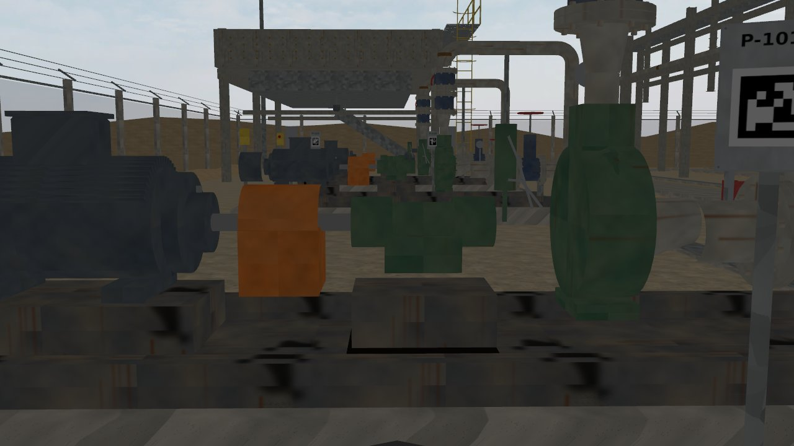
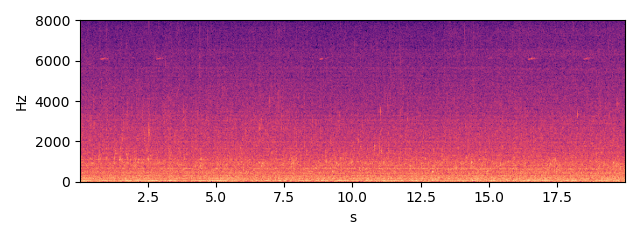
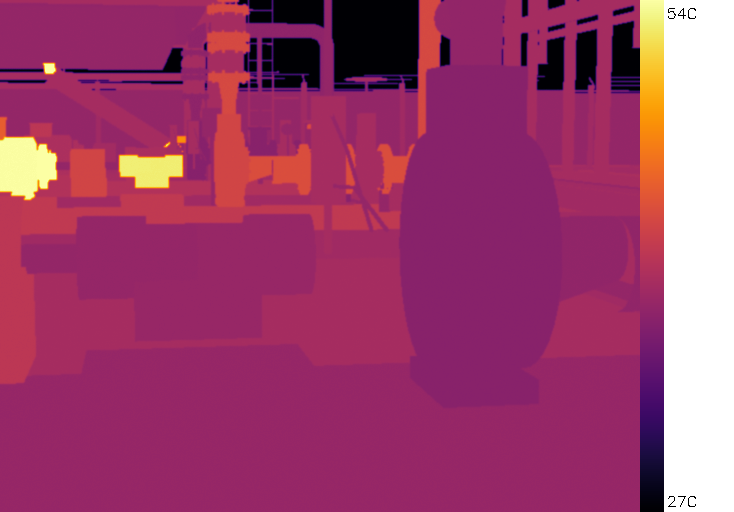
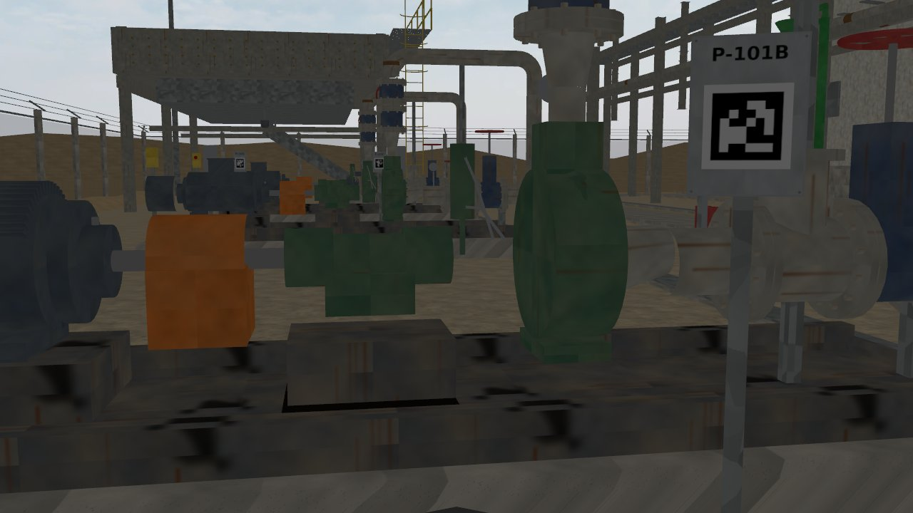
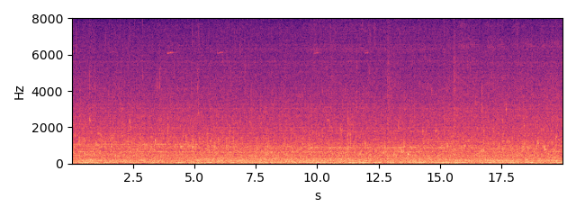
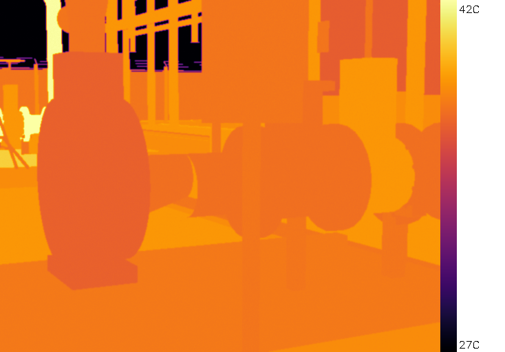
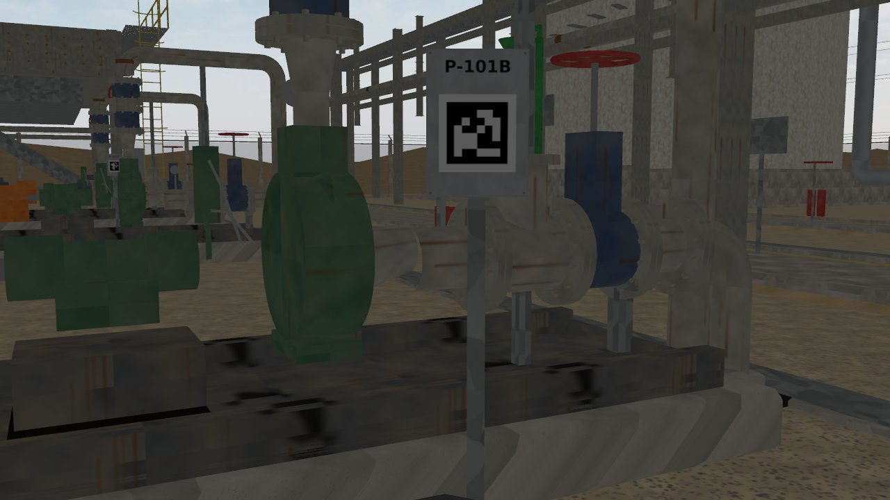
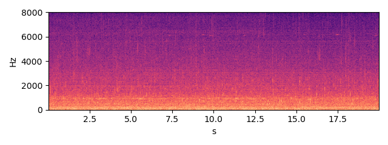

P-101B — OH2 overhung centrifugal pump
Status none HI 0.94 RUL: not estimated (no degradation trend)
Health indicator per inspection round; vertical lines = maintenance log entries; red band = RUL estimate.
Inspection snapshots (robot camera and microphone)

thermal, aim 3, max 54.9 C (Gazebo round 2026-10-03 16:41)

RGB, aim 3

sound, aim 3 (dwell window)

thermal, aim 4, max 55.0 C (Gazebo round 2026-10-03 16:41)

RGB, aim 4

sound, aim 4 (dwell window)

thermal, aim 5, max 42.9 C (Gazebo round 2026-10-03 16:41)

RGB, aim 5

sound, aim 5 (dwell window)
Alarm history
| time | level | fused score | HI | reasons | work order |
|---|---|---|---|---|---|
| 2026-10-08 12:33 | warning | 8.78 | 0.9147 | thermal_sibling | |
| 2026-10-08 23:13 | alarm | 10.57 | 0.8901 | thermal_sibling | requested |
| 2026-10-09 08:24 | alarm | 10.95 | 0.8759 | thermal_sibling | |
| 2026-10-09 17:07 | alarm | 7.47 | 0.8697 | thermal_sibling |
Maintenance log (CMMS view)
| date | type | details |
|---|---|---|
| 2026-10-04 | shutdown | {"duration_h": 4.64422406639085} |
| 2026-10-05 | duty_swap | {"new_duty": "P-101B"} |
| 2026-10-08 | work_order_opened | {"wo": "WO-0001", "priority": "normal", "reason": "thermal_sibling"} |
| 2026-10-12 | duty_swap | {"new_duty": "P-101A"} |
| 2026-10-12 | repair | {"wo": "WO-0001", "feedback": "not found", "parts_replaced": []} |
| 2026-10-19 | duty_swap | {"new_duty": "P-101B"} |
| 2026-10-20 | greasing | {"part": "pump_ce_brg"} |